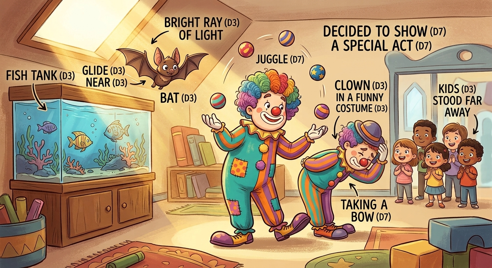

Memory Exam · Story 001–005
Match the word to its meaning
单词配对已移到总览中的独立板块，覆盖全部五篇故事、Day 1–30。每轮最多 8 对，可按故事或 Day 选择范围，原来的配对记录会在同一浏览器中沿用。
Miller Words / Story 001
Read each scene once with the labels visible, then cover the labels and retell the scene from memory.
Memory Exam · Story 001–005
单词配对已移到总览中的独立板块，覆盖全部五篇故事、Day 1–30。每轮最多 8 对，可按故事或 Day 选择范围，原来的配对记录会在同一浏览器中沿用。
03 / Read and retell
On the way to the playground, Miller wears a silly dress and plays tag and hide-and-seek. His friends pick up the rest of the balloons and add them to their toy trucks.
They run near the slides, balance on the boards, and shoot hoops.
Words: way, dress, tag, seek, pick up, rest, balloon, add, trucks, near, slides, boards, hoops

Far across the room, a bat begins to glide near a fish tank under a bright ray of light.
A clown in a funny costume begins to juggle. He decides to show us a silly act, and then he takes a bow.
Words: far, bat, glide, near, tank, ray, clown, costume, juggle, show, act, bow

At the beach, the children use science to dig for shells and build sand castles.
They build a monster from wood, stone, and metal, tie it with rope, and place it beside the castles. Their newly built monster looks funny but friendly.
Words: science, dig, shells, build, castles, wood, stone, metal, rope, built

By myself, I mix flour and butter near the oven, then roll out the dough and fold it over.
Finally, I tear a sheet of paper, fold it into a box, and use glue and tape to hold it together.
Words: myself, mix, flour, butter, oven, roll, fold, tear, glue, tape